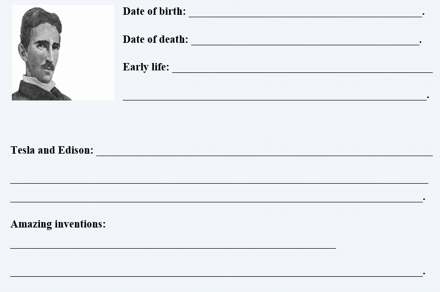
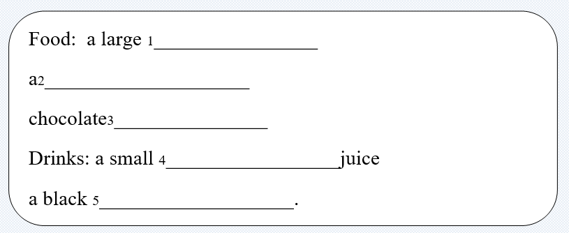

Nikola Tesla was born in 1856 in Austria-Hungary and emigrated to the U.S. in 1884 as a physicist. He pioneered the generation, transmission, and use of alternating current (AC) electricity, which can be transmitted over much greater distances than direct current.
Tesla patented a device to induce electrical current in a piece of iron (a rotor) spinning between two electrified coils of wire. This rotating magnetic field device generates AC current when it is made to rotate by using some form mechanical energy, like steam or hydropower. When the generated current reaches its user and is fed into another rotating magnetic field device, this second device becomes an AC induction motor that produces mechanical energy. Induction motors run household appliances like clothes washers and dryers. Development of these devices led to widespread industrial and manufacturing uses for electricity.
Tesla was Thomas Edison's rival at the end of the 19th century - in fact, he was more famous than Edison throughout the 1890's. His invention of polyphase AC electric power earned him worldwide fame but not fortune. At his zenith his circle of friends included poets and scientists, industrialists and financiers. Yet Tesla died alone and almost penniless in a New York hotel room in 1943. During his life, Tesla created a legacy of genuine invention that still fascinates today. After his death, the world honored him by naming the unit of magnetic flux density the "tesla."
Task1 Reading
Read the text and answer the questions.
🔸 Where and when was Nikola Tesla born?
🔸 When did he immigrate to the US as a physicist?
🔸 What home appliances do induction motors run?
🔸 At the end of the 19th century who was his rival?
🔸 Who was more famous at the 1890’s, Thomas Edison or Tesla?
🔸 What invention of his earned him worldwide fame?
🔸 When did he die?
🔸 After his death, what has been named after him?
Task2 Vocabulary
Read the verbs in the text and try to give definitions to them.
Task3 Fill the table with the information about Nicola Tesla.

Task4 Listening

Back